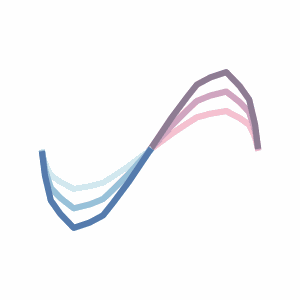
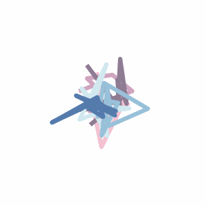
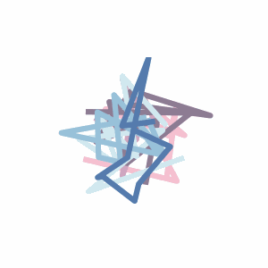
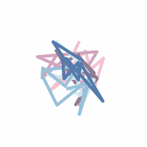

Differentiable Optimization of Similarity Scores Between Models and Brains
1MIT BCS
2HIH Tübingen
Content
- Optimization of Similarity Scores
- Scores to Capture Principal Components
- High Scores Failing to Encode Task Variables
- Metric Cards
Abstract
What metrics should guide the development of more realistic models of the brain? One proposal is to quantify the similarity between models and brains using methods such as linear regression, Centered Kernel Alignment (CKA), and Procrustes distance. To better understand the limitations of these similarity measures we analyze neural activity recorded in two experiments on nonhuman primates, and optimize synthetic datasets to become more similar to these neural recordings. How similar can these synthetic datasets be to neural activity while failing to encode task relevant variables? We find that some measures like linear regression and CKA, differ from Procrustes distance, and yield high similarity scores even when task relevant variables cannot be linearly decoded from the synthetic datasets. Synthetic datasets optimized to maximize similarity scores initially learn the first principal component of the target dataset, but Procrustes distance captures higher variance dimensions much earlier than methods like linear regression and CKA.
Optimization of Similarity Scores
Optimize randomly initialized dataset (e.g. model dataset) to maximize similarity score with a reference dataset (e.g. brain dataset).
Reference
Ridge Regression
CKA
Procrustes Angular Score
Scores to Capture Principal Components
High Scores Failing to Encode Task Variables
Optimizing for similarity scores reveals model datasets with high scores that fail to encode all the relevant task variables. Select a dataset and a set of metrics to compare.
Metric Cards
Invariances Properties
- PT: Permutation Transformation
- OT: Orthogonal Transformation
- ILT: Invertible Linear Transformation
- IS: Isotropic Scaling
- TR: Translation
- AT: Affine Transformation
TODO: relationships between measures?